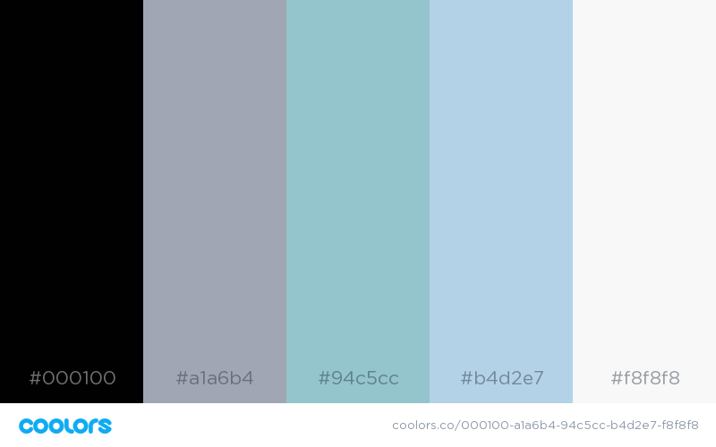
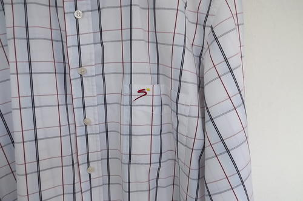

Character and Website Ideas
Website Colour Scheme and General Ideas

This colour scheme was generated by coolors.co.
This website will (hopefully) reflect the personality of my character - a sweet old man who is just
trying to learn HTML. He likes wearing button-up Sportsman's Shirts:

Supersport Shirt image from BidOrBuy.
The colour scheme is appropriate for his age (and besides, his favourite colour is blue).
Sleek and straight lines will be used in the styling - with little to no frills or
unnessesary decorations.
'Minimalistic' is the word of the day - simple, stylish and clean cut.
{kind=link}
Eddie's Story
My story began a long time ago in the small town of Pretoria (yes it was small back then). I went to the only school in town, and it is on this very school's bus where I first met the love of my life. Fast forward a few years, my parents didn’t have enough money to send me to university, however my father was adamant that I was to learn a trade – “Having a piece of paper with your name on it is nice, but if you have a trade, my boy, then you will always have work” was his philosophy on the subject. So, I went into the trade of instrument making, and for many years I made specialist instruments for all types of people – from doctors, to other craftsmen.
As grateful as I am for getting the chance to work and learn such a skill, it become quite repetitive - I had a burning passion to learn something new. I started to look for work elsewhere; it was now that I discovered the second love of my life; teaching. I was fortunate enough to be hired as a part-time lecturer (I had been trained in technical drawing during my trade) by an institute that simultaneously allowed me to complete a mechanical engineering diploma. After this, I studied further in Theology – as I came from a very religious family – as well as Social Studies, however my true passion remained in teaching. It was then that I noticed a great need in my country – there were too many students, coming from previously (or currently at the time) disadvantaged backgrounds that did not possess the skills that the institute assumed they should have that were needed to pass (let alone excel) at the technical drawing course (or any other course that requires 3D visualization skills). I then created my third love – a one-year bridging course for such students, that would allow them to catch up the missing skills in minimal time, and thus further their studies with better pass rates and grades. I headed this program for many years, until being asked to pass it on to another, younger lecturer. I continued to lecture at the institute until retiring only six years ago.
It is because of this passion for teaching and learning that I created this website – with
the hopes
to inspire just one other person to go and read a ‘something’, a ‘anything’.
Reading will opens the mind!